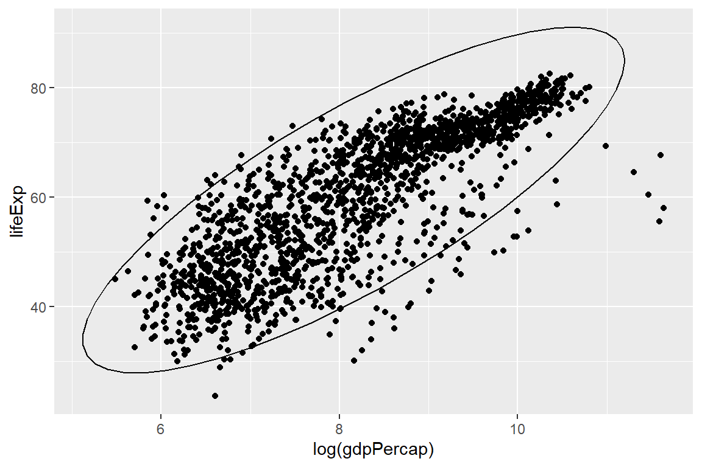

第 19 章 网络爬虫
19.1 链家网
urls <- paste0("https://sh.lianjia.com/ershoufang/pg", seq_along(1:2))
scrape_house_info <- function(url) {
web <- read_html(url)
title <- web %>%
html_nodes('.clear .title a') %>%
html_text()
houseinfo <- web %>%
html_nodes('.houseInfo') %>%
html_text()
price <- web %>%
html_nodes('.totalPrice span') %>%
html_text()
price_per <- web %>%
html_nodes('.unitPrice span') %>%
html_text()
df <- data.frame(title, houseinfo, price, price_per)
return(df)
}19.2 猪肉价格
df_price <-
read_html("https://hangqing.zhuwang.cc/shengzhu/20190905/407978.html") %>%
html_node(".tabzj") %>%
html_table(header = T) %>%
set_names(
c("region", "name", "price_today", "price_yestoday", "diff_last_day", "diff_last_week")
) %>%
mutate_at(vars(name), ~str_remove_all(., " ") ) %>%
mutate_at(vars(name), ~if_else( name == "黑龙江", "黑龙江省", .))
df_pricechina <- st_read("./demo_data/chinamap_data/bou2_4p.shp") %>%
st_set_crs(4326) %>%
group_by(NAME) %>%
summarize()## Reading layer `bou2_4p' from data source `H:\R_for_Data_Science\demo_data\chinamap_data\bou2_4p.shp' using driver `ESRI Shapefile'
## Simple feature collection with 925 features and 7 fields
## geometry type: POLYGON
## dimension: XY
## bbox: xmin: 73.45 ymin: 6.319 xmax: 135.1 ymax: 53.56
## epsg (SRID): NA
## proj4string: NAchina_uni <- china %>%
mutate( NAME = iconv(NAME, "GBK", "UTF-8") ) %>%
mutate_at(vars(NAME), ~str_remove_all(., "自治区|回族|维吾尔|壮族") ) %>%
mutate_at(vars(NAME), ~str_trim(.))ggplot(data = df) +
geom_sf( aes(fill = price_today < 28), show.legend = FALSE) +
geom_sf_text(aes(label = NAME),
size = 3
) +
geom_sf_text(aes(label = price_today),
size = 3,
#nudge_x = c(-0.4, 0.5, 0.7),
nudge_y = c(-1, -1, -1)
) +
coord_sf(crs = 4326) +
ggtitle("全国猪肉价格地图")